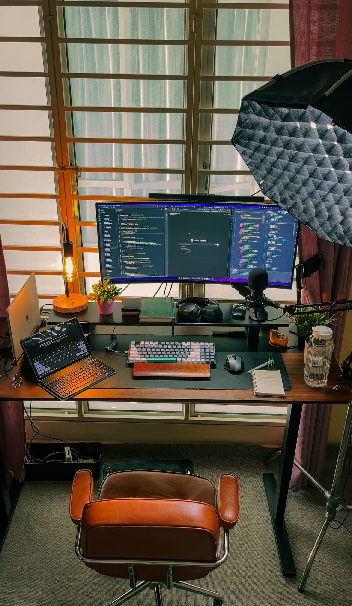
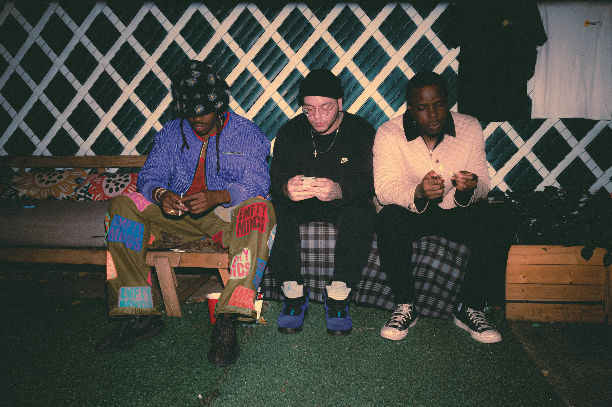
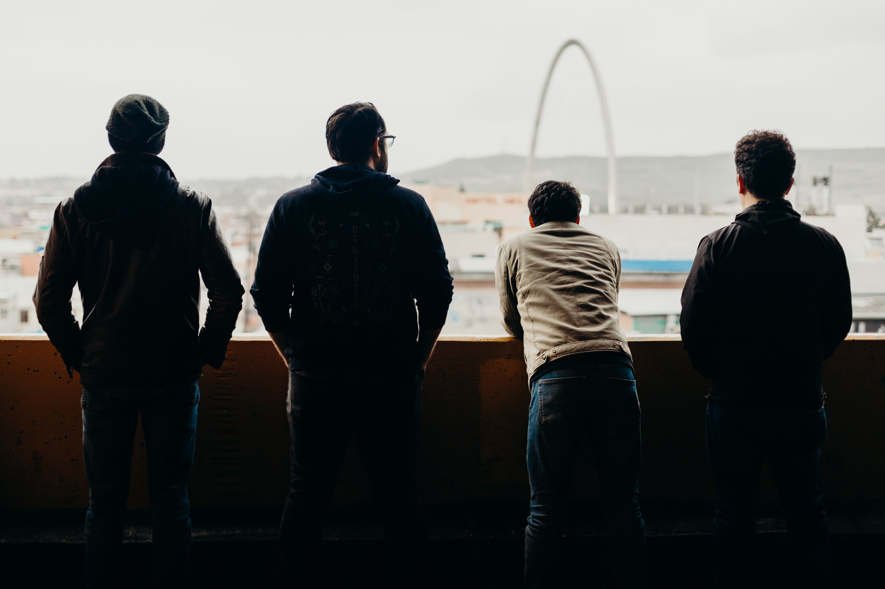

256 likes
bryan.then Grew up more into video games, American music, and bothering my siblings than anything else. Some things never really change.
Three chapters of the same story : who I was, who I am, and who I'm working to become.
Growing up games, music, dreams that didn't stick, and lessons learned early.


London, Data & AI, basketball, and friendships that shifted along the way.


The roadmap AI engineering, investing, and building something that lasts.
